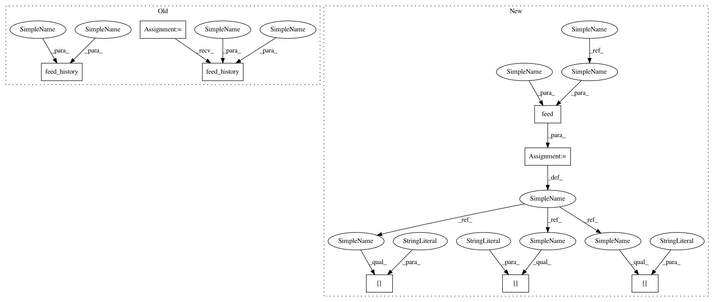

6011e4f2dadf71c5c13f5e95a2649d1e5b7cbe11,apps/rss_feeds/views.py,,load_feed_settings,#Any#Any#,188
Before Change
timezone = user.profile.timezone
stats["duplicate_addresses"] = feed.duplicate_addresses.all()
stats["feed_fetch_history"] = MFeedFetchHistory.feed_history(feed_id, timezone=timezone)
stats["page_fetch_history"] = MPageFetchHistory.feed_history(feed_id, timezone=timezone)
return stats
@json.json_view
After Change
user = get_user(request)
timezone = user.profile.timezone
fetch_history = MFetchHistory.feed(feed_id, timezone=timezone)
stats["feed_fetch_history"] = fetch_history["feed_fetch_history"]
stats["page_fetch_history"] = fetch_history["page_fetch_history"]
stats["feed_push_history"] = fetch_history["push_history"]
stats["duplicate_addresses"] = feed.duplicate_addresses.all()
return stats
In pattern: SUPERPATTERN
Frequency: 4
Non-data size: 8
Instances
Project Name: samuelclay/NewsBlur
Commit Name: 6011e4f2dadf71c5c13f5e95a2649d1e5b7cbe11
Time: 2013-04-15
Author: samuel@ofbrooklyn.com
File Name: apps/rss_feeds/views.py
Class Name:
Method Name: load_feed_settings
Project Name: samuelclay/NewsBlur
Commit Name: 6011e4f2dadf71c5c13f5e95a2649d1e5b7cbe11
Time: 2013-04-15
Author: samuel@ofbrooklyn.com
File Name: apps/rss_feeds/views.py
Class Name:
Method Name: exception_change_feed_address
Project Name: samuelclay/NewsBlur
Commit Name: 6011e4f2dadf71c5c13f5e95a2649d1e5b7cbe11
Time: 2013-04-15
Author: samuel@ofbrooklyn.com
File Name: apps/rss_feeds/views.py
Class Name:
Method Name: exception_change_feed_link
Project Name: samuelclay/NewsBlur
Commit Name: 6011e4f2dadf71c5c13f5e95a2649d1e5b7cbe11
Time: 2013-04-15
Author: samuel@ofbrooklyn.com
File Name: apps/rss_feeds/views.py
Class Name:
Method Name: load_feed_statistics